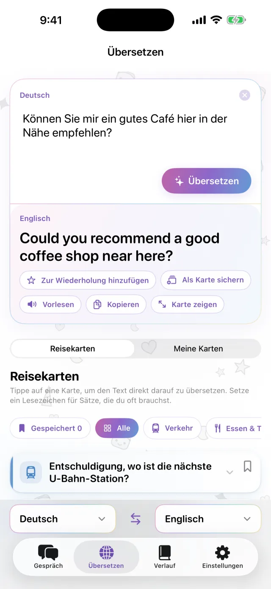
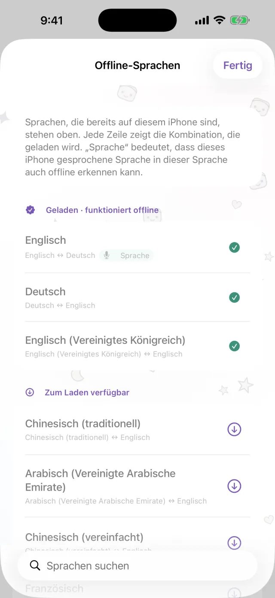
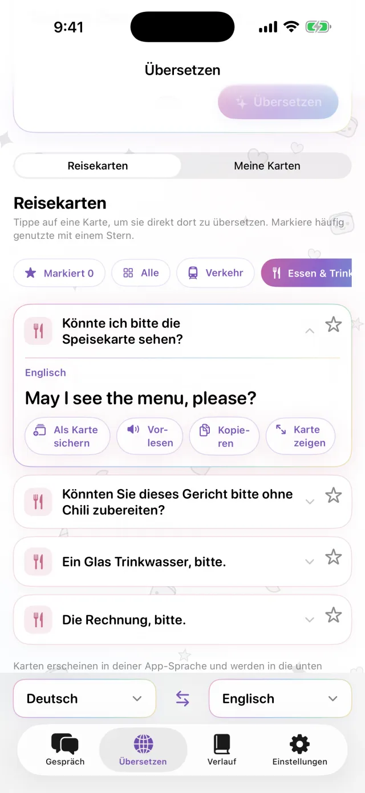
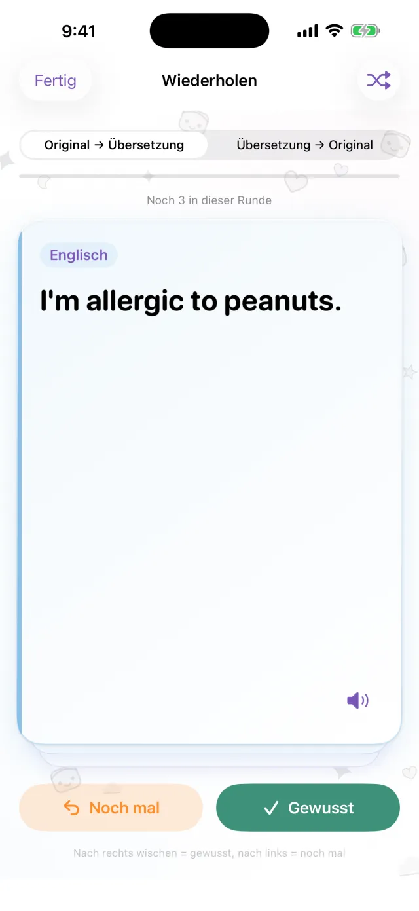

Übersetzer für iPhone
Übersetzer für iPhone
Leg das iPhone zwischen euch.
Mehr nicht.
Tippe auf das Mikrofon und sprich. Die Übersetzung erscheint auf der anderen Bildschirmhälfte, dem Gegenüber zugewandt. Antwortet die andere Person, funktioniert es genauso. Lade die Sprachen vorher herunter, dann klappt es auch ohne Verbindung.
Bald im App Store- Etwa 20 Sprachen
- Offline nach dem Download
- Ohne Registrierung
Tippen
Du kannst nicht laut sprechen? Dann tippe.
An ruhigen Orten oder wenn die andere Person zu schnell spricht, tippst du einfach. Die Übersetzung kannst du bildschirmfüllend anzeigen und der anderen Person zeigen.
- Kopieren oder vorlesen lassen
- Beide Sprachen mit einem Tippen tauschen

Offline
Übersetzen ohne Verbindung
Übersetzung, Spracherkennung und Vorlesen laufen auf deinem iPhone. Lade die Sprachen vor der Reise herunter, dann funktioniert es im Flugzeug oder bevor du eine SIM-Karte hast. Was du sagst, wird nicht an einen Server gesendet. Aufnahmen werden nicht gespeichert.

Satzkarten
Speichere, was du immer wieder sagst
Die Hoteladresse, eine Lebensmittelallergie, der gesuchte Bahnhof. Sichere sie als Karten, dann musst du sie nicht erneut tippen. Tippe auf eine Karte, und sie wird in die Sprache des Gegenübers übersetzt. Fertige Reisekarten für Verkehr, Essen, Unterkunft und Einkaufen sind dabei.

Pro
Gesicherte Sätze wiederholen, wenn sie fällig sind
Tippe bei einem Satz auf den Stern, um ihn zum Wiederholen zu sichern. Wusstest du ihn, kommt er nach 1, 3, 7, 14 und 30 Tagen wieder. Wusstest du ihn nicht, siehst du ihn am selben Tag noch einmal. Du kannst vom Original zur Übersetzung üben oder umgekehrt. Dieser Teil gehört zu Pro.

Praktisch bei
- Bestellen im kleinen Restaurant
- Dem Taxifahrer die Adresse sagen
- Eine Allergie in der Apotheke erklären
- Gepäck an der Hotelrezeption lassen
- Nach dem Weg fragen
In 30 Sekunden gezeigt
In diesem Video ist der Flugmodus an.
Die wichtigsten Daten
| Sprachen | Etwa 20 (die Sprachen, die Apple direkt auf dem Gerät übersetzt) |
|---|---|
| Offline | Ja, nach dem Download der Sprachen |
| Spracheingabe | Ja. Einige Sprachen nur per Tastatur |
| Konto | Nicht nötig |
| Preis | Kostenlos. Pro kostet extra (siehe unten) |
| Voraussetzung | iPhone mit iOS 18 oder neuer |
- Beim ersten Mal brauchst du eine Verbindung, um Sprachen herunterzuladen.
- Preise werden im App Store in deiner Landeswährung angezeigt.
Kostenlos und Pro
Kostenlos
- Gespräch von Angesicht zu Angesicht
- Tippen und Vollbildanzeige
- Offline-Übersetzung
- Reisekarten und 3 eigene Karten
- Kleines Werbebanner
Pro
- Keine Werbung
- Beliebig viele Karten
- Verlauf und Wiederholen nach Intervallen
Wöchentlich, monatlich oder einmalig kaufen.
Lade die Sprachen vor der Reise herunter.
Bald im App StoreiPhone · iOS 18 oder neuer · Kostenlos laden · So funktioniert jeder Bildschirm